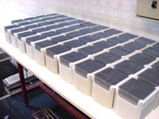
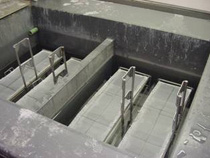
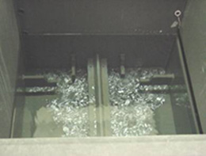

Prior
to fabricating silicon wafers into solar cells, thorough chemical etching and
cleaning are necessary to remove surface damage and any residual contaminants.
Surface damage to the wafer inevitably exists as a result of the sawing process
with the damaged regions typically penetrating up to 40 microns from the surface
when using inner diameter diamond tipped saws and up to 20 microns depth of
damage when using wire sawing. Concentrated sodium hydroxide (typically 30%
w/v) is often used at approximately 80°C to remove 30-40 microns
from each side of the wafer at a rate of about 2 microns per minute. The wafer
thickness during such an etch will therefore reduce
by 60-80 microns.
Wafers
are normally etched by placing them in teflon (or other
suitable material such as polypropylene) wafer cassettes as shown to the left.
These typically have slots designed to hold 25 wafers. When using wafers that
have been wire sawn, an etching time of only about 10 minutes is necessary to
remove approximately 20 microns from each surface of the wafer. The chemical
baths need to be well ventilated to remove the sodium hydroxide fumes as well
as the hydrogen gas produced in the chemical reaction between the sodium hydroxide
and silicon.

Sodium silicate is produced during the etching process which accumulates
in the chemical bath over a period of time. These concentrated etching solutions
can often be used for a period of weeks or even months without replacement although
sodium hydroxide replenishment is necessary after each batch to replace an equivalent
amount consumed in the chemical reaction with the silicon.

At
the completion of the saw damage removal etch the wafers arerinsed in
water prior to being placed into the texturing solution of dilute sodium hydroxide.
Some manufacturers for simplicity choose to transfer the wafers directly into
the texturing solution without requiring the intermediate rinse in wafer. The
only challenges with the latter approach result from the need to have the texturing
solution appropriately prepared at the right time and also the greater difficulty
in controlling the sodium hydroxide solution concentration in the texturing
bath due to the additional solution being transferred on the wafer surfaces.
Level
2 – Saw Damage Removal Etch
The
amount of silicon removed in the saw damage removal etch depends heavily on
the solution temperature and the time for etching, but only weakly on the actual
concentration of the sodium hydroxide provided the concentration is maintained
above 20% W/V. The usual sodium hydroxide concentration is 30% W/V which simply
means that there are 300 grams of sodium hydroxide in each litre of solution.
Another factor that affects the etching rate is the accumulation of sodium silicate.
As the sodium silicate concentration increases, the viscosity of the etching
solution also increases, therefore decreasing the rate at which the hydrogen
gas is able to evolve from the surface. This in turn reduces the etching rate
at the surface as the sodium hydroxide’s effectiveness at reacting with the
silicon surface is reduced. Eventually, the sodium silicate accumulation will
be so great that the viscosity will reach a sufficiently high level that the
evolving hydrogen trapped on the wafer surface will cause the cassette of silicon
wafers to float, making the etching unreliable and less effective.
Without
the presence of a reasonable accumulation of sodium silicate in the etching
solution, the sodium hydroxide etch produces a highly polished surface to the
silicon. Some manufacturers deliberately choose to retain high levels of sodium
silicate in this etching solution to retard the etching rate to about 1 micron
per minute while simultaneously avoiding the formation of the highly polished
surface. In this latter regime, the silicon surface takes on a much rougher
appearance, looking more like the surface seen on cauliflower. Some manufacturers
believe that this type of surface is superior for nucleating pyramid growth
during the subsequent texturing process.

Excessive
etching in the sodium hydroxide will lead to wafers becoming thinner than desirable.
This is not only wasteful in terms of consumption of silicon and chemicals,
but also leads to wafers with reduced strength that can adversely affect the
number of breakages that occur during etching and subsequent processing. Increased
losses during manufacturing such as through breakages are referred to as “yield“
losses. Yield losses do not necessarily correlate with reduced performance
solar cells but do impact the overall cost of solar cells produced.
At
the other extreme, insufficient etching to remove saw damage can often lead
to a degradation in the minority carrier lifetimes
of the wafers during subsequent high temperature processing. This can result
from the propagation of the damage into the bulk of the crystalline silicon
material or even the adverse affects of incompletely removed contaminants from
the damaged regions penetrating into the crystalline silicon.
There
are several cautions to heed with regard to the saw damage removal etch.
1. Sodium silicate
is a very good thermal insulator therefore causing long periods of time delay
if for any reason the bath temperature needs to be reduced. It is even feasible
for the heat given off during the etching process to exceed the rate at which
heat is dissipated from the top surface of the etching solution and the walls
of the etching bath. In this situation, the bath temperature steadily increases
during the etching process even with zero electrical power applied to the heating
elements. This can inadvertently lead to significantly increased etching rates
which can further exacerbate the problem with excessive bath heating. In this
situation, some of the sodium silicate needs to be removed although manufacturers
in general will only replace half of this etching bath at a time so as to retain
adequate levels of sodium silicate to produce the preferred surface finish.
2. Once the sodium
silicate concentration exceeds a certain level, the solution needs to be kept
at temperatures above room temperature to prevent solidification. The change
of density upon solidification can damage the etching tanks or baths although
in general the solidification process can be reversed.
3. Some manufacturers
mistakenly believe that it is not possible to re-melt the solidified solution
described above without destroying the heating elements. This is the result
of the fact that the sodium silicate melts too slowly and transfers heat too
poorly to allow the energy being dissipated within the heating element to be
transferred at a reasonable rate to the solidified material. Without careful
constraints to limit the electrical power delivered to the heating element,
the inevitable result is that the heating element is destroyed by the excessively
high temperatures. Careful controls need to be implemented to drastically limit
the amount of electrical energy delivered to the heating elements to prevent
this problem and to allow the sodium silicon to gradually melt over a period
of 1-2 days.
4. When initially
establishing an etching solution of 30% W/V sodium hydroxide, it is important
to realize that concentrated sodium hydroxide is significantly more
dense than water. Consequently, if highly concentrated liquid sodium
hydroxide is added to water, the tendency will be for the concentrated solution
to sink directly to the bottom of the tank and not intermix with the water.
This is the principle upon which solar ponds operate, with the resulting concentration
gradient producing a corresponding density gradient. When heat is then dissipated
in the densest region of the etching solution, the density gradient suppresses
convention preventing the heating of the upper layers of the solution. Temperature
differences as high as 30 degrees have been measured between lower regions and
upper regions of solutions, with corresponding very poor consequences for the
etching process, particularly with regard to uniformity across the wafer surface.
Whenever making new solutions, thorough stirring is essential to ensure a uniform
mixture.
5. At the completion
of etching, wafers need to be transferred relatively quickly to either a rinsing
bath of water or else directly into the texturing solution as shown below.
If this transfer does not take place within about 15 seconds, the sodium silicate
will solidify on the surface with corresponding adverse effects for subsequent
texturing and even high temperature processes if the sodium silicate is not
removed in a hydrofluoric acid solution.